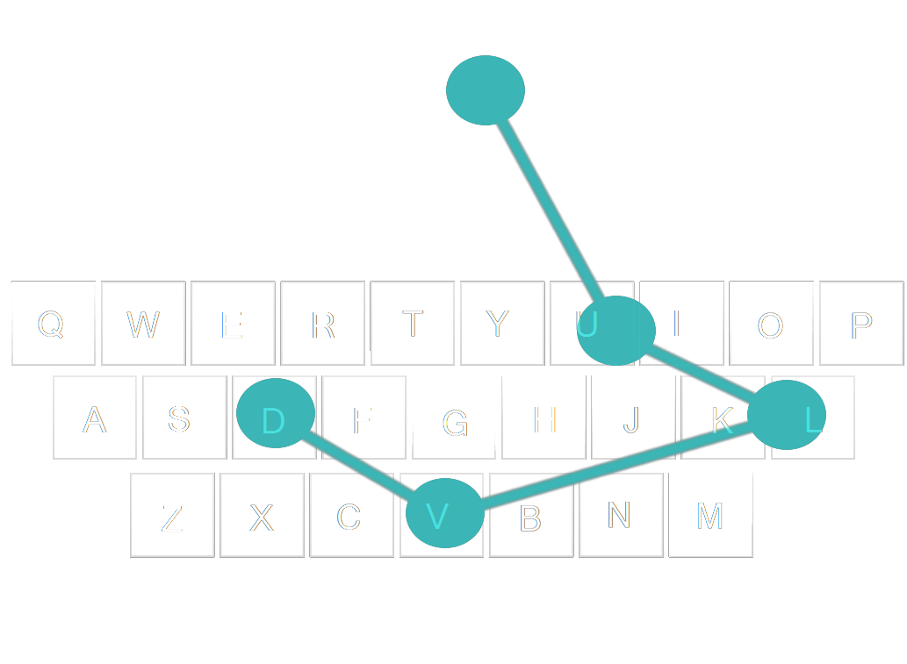
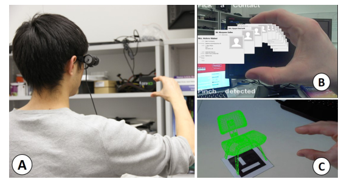
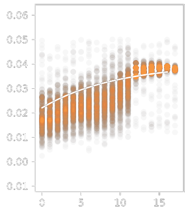
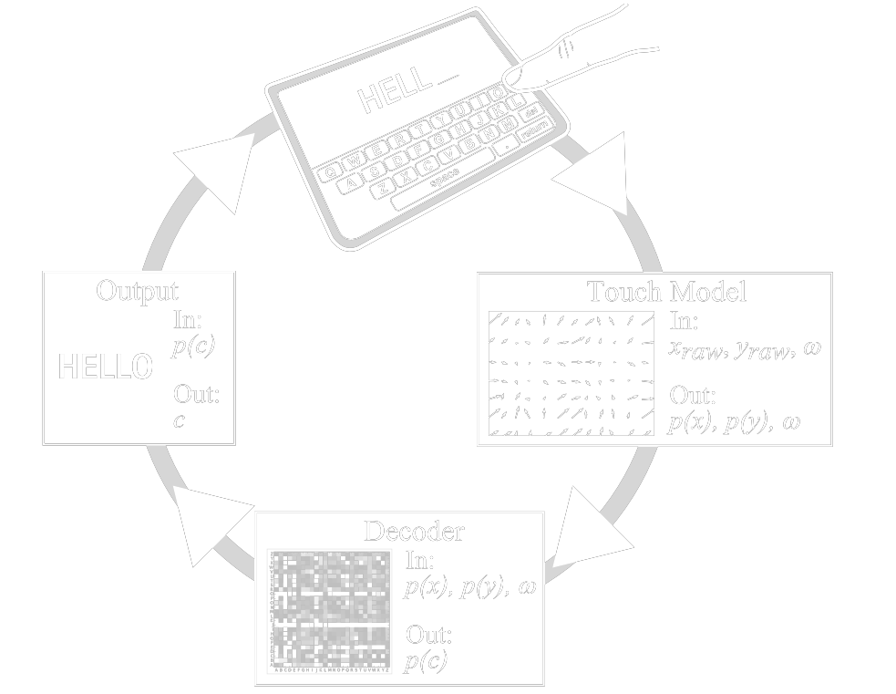

Antti Oulasvirta
Aalto University, Finland

Computational Approaches to Interaction Design
This course introduces computational methods for HCI.As interfaces become more sophisticated, designing them requires an exponentially expanding set of design decisions. Computational approaches are needed to synthesise elements of interfaces, to learn interaction structure from observations and to infer user intentions in a noisy world. Computational approaches empower HCI researchers to building sophisticated, robust interfaces quickly and reliably.
Summary & objectives
The course will cover:
- Optimisation: solving interaction problems by deriving interface configurations which satisfy constraints and maximize performance criteria.
- Inference: a principled and robust approach to designing a transformation from input to useful action.
This course will:
- demonstrate how computational approaches can turn new technologies into viable interfaces while reducing inconsistency;
- extend researchers' capabilities to build robust interactions across a wide range of contexts and devices;
- show how computational approaches can focus interaction design on the interesting work of specifying the questions, and letting computational methods resolve the answers.
Attending
Timing
- This is a 3-credit course in the ACM SIGCHI course program
- It is delivered in 3x80 minute blocks.
- The course will take place starting at 11:30AM on Monday 8th May.
- The course code is C03.
Provisional schedule
May 8th 2017
| Block 1 | 11:30 - 12:10 | Introduction to computational interaction design |
| 12:10 - 12:50 | Designing layouts with combinatorial optimization | |
| Break | ||
| Block 2 | 14:30 - 15:10 | Machine learning for vision-based interaction |
| 15:10 - 15:50 | Robust motion-based interfaces using probabilistic state tracking | |
| Break | ||
| Block 3 | 16:30 - 17:10 | Probabilistic decoding for intelligent text entry |
| 17:10 - 17:50 | Summary and discussion | |
Pre-requisites
To get the most out of this course, participants should have working knowledge of undergraduate mathematics, particularly basic probabilty and linear algebra (even if it is a vague and rusty memory!).
Software and preparation
All of the materials will be delivered as interactive Jupyter notebooks, which interleave notes and live coding examples. All coding examples will be in Python, and familiarity with Python is strongly recommended. We also provide the materials for download and use on your own machine before and after the conference course sessions. Participants must bring laptops to participate.
Participants will be able to run course materials during the course . There are no printed materials; this course is delivered solely as interactive electronic materials.
Please make sure you have read the the setup page and tested that you are able to access and run the materials on your machine.
Note that if you use the "easy" option, you do not have to install anything on your machine.
We will post detailed instructions so participants can prepare for the interactive electronic course materials in advance of the course.
Outline
Links to the full notes will be made available shortly before the course.
Designing layouts with combinatorial optimization
Antti OulasvirtaThis part introduces combinatorial optimization methods: algorithmically searching for combinations of design decisions that best fulfill given goodness criteria. After an overview, three hands-on exercises focus on core requirements: definition of design tasks as search problems, algorithmic approaches to searching the defined design spaces, and developing objective functions using design knowledge and theories.
Particpants will:
- have skills in formulating HCI design problems such that an algorithm can help in exploring it;
- understand the requirements of optimization approach;
- understand how it can be tied to user-centered design and data-driven design.

Machine learning for vision-based interaction
Otmar HilligesRecovering intent from low-level sensor data is a core problem in many interactive systems. This section of the course will introduce the participants to the basic problems and available solutions surrounding human action recognition from sensor data. After an overview of relevant HCI problems we will give an introduction to succesful machine-learning models and how to apply these to common tasks such as static and dynamic gesture recognition.
Particpants will:
- understand which types of HCI problems lend themselves well to data-driven approaches
- know how to collect and label data for training and testing
- have a basic understanding of which models to choose for which purpose
- understand successful models (in the HCI context) in more detail.

Robust motion-based interfaces using probabilistic state tracking
John WilliamsonProbabilistic tracking is able to maintain a continuously evolving set of hypotheses about user intent, and update them according to evidence observed. This is a natural, principled way to robustly infer what a user wants to do from measurements observed from an input device. This section will cover applying sequential probabilistic tracking to a range of sensors. Sophisticated, high-dimensional, noisy sensors are becoming an important part of interactive systems.
Particpants will:
- be able to represent interaction problems in motion-based interfaces as inference problems;
- know when and where probabilistic inference is likely to be helpful in interaction;
- understand how to apply probabilistic methods to robustly estimate the evolution of user intentions over time, even with very noisy input devices

Probabilistic decoding for intelligent text entry
Per Ola KristenssonThis section will view text entry design as fundamentally a problem of decoding the user's intended text from noisy observations from a variety of sensors, such as touchscreens or depth sensors. The section will introduce key concepts in statistical language processing and give an overview of how to design and implement a probabilistic decoder for text entry. The section will illustrate how such decoding enable the design of several new text entry methods for a variety of use cases.
Particpants will
- understand how designing and implementing probabilistic decoders can result in faster, more flexible and more accurate text entry systems;
- be aware of key design decisions that affect decoding performance.
Citing
To cite this course, use the following BibTeX entry:
@inproceedings{computationalinteractioncourse:2017,
author = {Otmar Hilliges and
Per Ola Kristensson and
Antti Oulasvirta and
John Williamson},
title = {Computational Interaction Design},
booktitle = {ACM SIGCHI 2017 Courses},
year = {2017}}
2017 / computationalinteraction.org